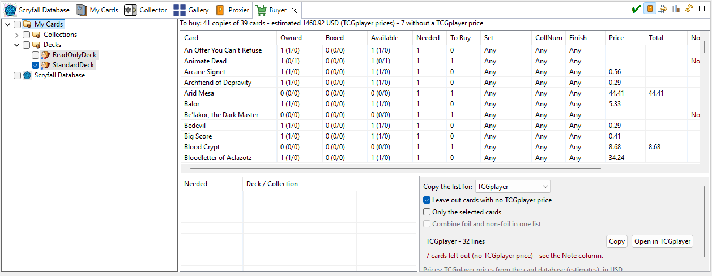

Buyer
The Buyer view is your buy list: which cards do I still need for these decks, and what will
they cost? It works like the Proxier, turned toward buying, and prepares the
list for your favorite store.

How to use it
- On the left, check the decks and collections to complete (check a folder to take everything in it).
Boxed decks aren't listed: their cards are already in use.
- The table lists every card you need, with how many to buy and an estimated price.
- Click a row to see which list needs that card.
- At the bottom, choose your store, then Copy the list and paste it into the store's bulk-entry
box — or click Open in TCGplayer to open TCGplayer's Mass Entry already filled in.
The columns
| Column | Meaning |
|---|
| Owned / Boxed / Available / Needed | As in the Proxier. |
| To Buy | How many copies to buy. |
| Price | The estimated price, in the store's currency (TCGplayer in US$, Cardmarket in €). |
| Note | A warning when the store has no price for that printing and finish — it is probably
not available there. |
Options
- Exact Match — buy the exact printing (set, collector number and finish) instead of any
printing. Only the stores that can take a specific printing are then offered.
- Replace Proxies (on by default) — count proxies as missing: buy genuine copies to replace them.
- Only To Buy — only the rows with something to buy.
- Only the selected cards — build the store list from the selected rows only.
- Combine foil and non-foil in one list — most stores want separate lists; this merges them.
- Leave out cards with no TCGplayer price (TCGplayer) — skip the cards it doesn't list.
- Create Collection — create a Wishlist/To Print collection (named ToBuy) with the
cards to buy. See Wishlists and to-print lists.
- Refresh — reload the decks and collections.
Stores
The copy panel prepares the list the way each store's bulk-entry page expects it: TCGplayer (with
Mass Entry), Cardmarket, Card Kingdom, Face to Face Games, The Mythic Store, Imaginaire, and a plain
list for anywhere else. It starts on the store that matches your price source
(Prices).
See also: Wishlists and to-print lists ·
Proxier · Boxed decks